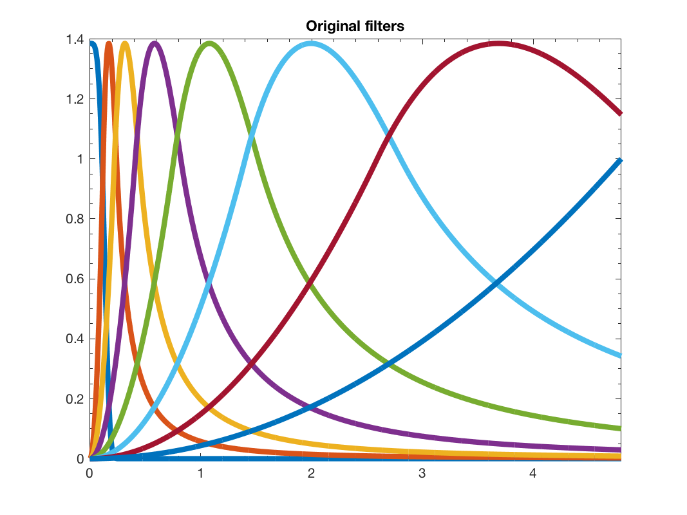
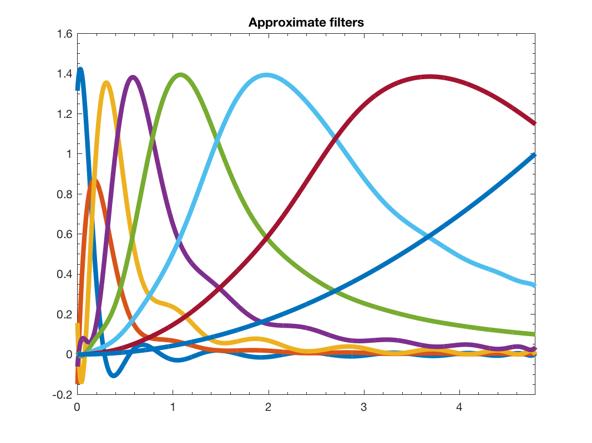

c = gsp_approx_filter(G, filter, m, N); c = gsp_approx_filter(G, filter, m); c = gsp_approx_filter(G, filter); c = gsp_approx_filter(G, filter, m, N,param);
| G | graph structure or range of application |
| filter | filter or cell array of filters |
| m | maximum order Chebyshev coefficient to compute (default 30) |
| N | grid order used to compute quadrature (default is m+1) |
| param | optional parameter |
| c | matrix of Chebyshev coefficients |
This function creates the approximate filters of g with a truncated Chebyshev polynomial.
param contain only one field param.verbose to controle the verbosity.
Example:
N = 100;
order = 15;
G = gsp_sensor(N);
G = gsp_estimate_lmax(G);
g = gsp_design_abspline(G,8);
ga = gsp_approx_filter(G,g,order);
paramplot.show_sum = 0;
figure(1)
gsp_plot_filter(G,g,paramplot);
title('Original filters')
figure(2)
gsp_plot_filter(G,ga,paramplot);
title('Approximate filters');
x = rand(N,1);
param.order = order;
c1 = gsp_filter_analysis(G,g,x,param);
c2 = gsp_filter_analysis(G,ga,x,param);
norm(c1-c2)/norm(c1)
This code produces the following output:
ans = 6.1454e-15 